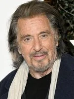
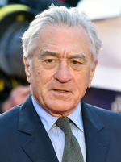
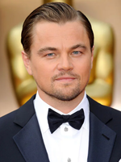
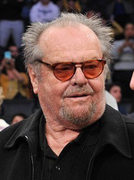
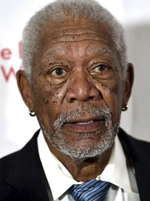
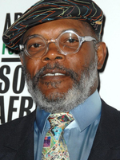

Tom Hanks
Acteur, artiste musical, auteur, réalisateur, producteur et scénariste américain né le 9 juillet 1956 à Concord.
Palmares

Al Pacino
Acteur, auteur, réalisateur, producteur et scénariste américain né le 25 avril 1940 à New York.
Palmares

Robert de Niro
Acteur, artiste musical, réalisateur et producteur américain né le 17 août 1943 à New York.
Palmares

Leonardo DiCaprio
Acteur, producteur et scénariste américain né le 11 novembre 1974 à Los Angeles.
Palmares

Jack Nicholson
Acteur, artiste musical, réalisateur, producteur et scénariste américain né le 22 avril 1937 à Neptune.
Palmares

Morgan Freeman
Acteur, artiste musical, réalisateur et producteur américain né le 1 juin 1937 à Memphis.
Palmares

Samuel L.Jackson
Acteur, artiste musical et producteur américain né le 21 décembre 1948 à Washington.
Palmares